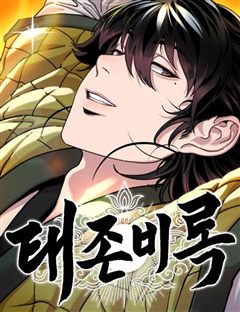

네이버웹툰 추천 인기 순위 TOP 30
네이버웹툰에서 지금 연재 중인 작품을 네이버웹툰 공식 인기 순위 순서로 모았어요. 네이버웹툰·카카오웹툰·레진코믹스에서 조건에 맞는 작품 748개 중 인기 순으로 30개를 골랐어요. 인기 TOP 3: 광마회귀, 호랑이형님, 화산귀환
2026-10-01 기준 · 성인 작품 제외
내 취향으로 더 좁혀서 추천받기 →-
1
 네이버웹툰
네이버웹툰광마회귀
무공에 미친 광마 이자하. 그는 마교 교주의 천옥을 훔쳐 쫓기던 중 벼랑에서 떨어지게 된다. 모든 게 끝났다고 생각한 순간 눈을 떠보니, 사람들에게 무시당하던 점소이 시절로 돌아와 있는데... 게다가 억울한 누명으로 두들겨 맞고 객잔은 박살이 나 있는 상황. 점소이 시절로 회귀한 광…
사이다세계관회귀판무소설원작네이버웹툰에서 보기 → -
2
 네이버웹툰
네이버웹툰호랑이형님
신비한 힘을 가진 아이를 이용하여 세상을 지배하려는 반인반수 흰눈썹! 그리고 얼떨결에 아이의 보호자가 된 괴물호랑이 빠르와 착호갑사 지망생 가우리! 이제 힘을 합쳐 흰눈썹으로부터 아이와 세상을 지켜라!!!
명작세계관동양풍판타지판무동물네이버웹툰에서 보기 → -
3
 네이버웹툰
네이버웹툰화산귀환
대 화산파 13대 제자.천하삼대검수 매화검존 청명. 천하를 혼란에 빠뜨린 고금제일마 천마의 목을 치고 십만대산의 정상에서 영면. 백 년의 시간을 뛰어넘어 아이의 몸으로 다시 살아나다. ......뭐? 화산이 망해? 이게 뭔 개소리야!?
명작개그세계관동양풍판타지회귀네이버웹툰에서 보기 → -
4
 네이버웹툰
네이버웹툰육아일기
이젠 갠플이 아니라 팀플이다! 조별 과제와 차원이 다른 인생을 건 팀플이 시작된다. 1인가구에서 2인가구로 2인가구에서 3인 가구로 인생 난이도가 급격히 상승한 자까 작가의 일상 이야기
컷툰공감결혼생활연애/결혼공감가벼운네이버웹툰에서 보기 → -
5
 네이버웹툰
네이버웹툰44교시 생존수업
갑자기 세상에 ‘검은 원’이라 불리는 구멍들이 생겨나기 시작했다. 검은 원은 미스테리 그 자체. 생긴 원인도, 내부에 뭐가 있는 지도 밝힐 수 없었다. 그저 지금까지 검은 원에 빠진 후 돌아온 사람이 단 한 명도 없다는 걸 빼고. 어느 날 주인공 도윤의 학교에도 검은 원이 생겨났다.…
비쥬얼쇼크학원액션스릴러서바이벌서스펜스네이버웹툰에서 보기 → -
6
 네이버웹툰
네이버웹툰절대군림
"이 강호, 제가 먹습니다!" 왼손에는 군자검을, 오른손에는 지옥도를 든 미스터리한 과일상 아들. 입담과 재주는 물론, 압도적인 무공 실력까지 갖춘 완벽한 그의 진짜 정체는 무엇일까. '강호제패'를 품은 스무 살 청년, '적이건(赤利乾)'의 유쾌한 여정이 시작된다!
천마정통무협동양배틀능글남네이버웹툰에서 보기 → -
7
 네이버웹툰
네이버웹툰별을 품은 소드마스터
기사를 동경하는 슬럼가의 부랑아 블라드. 검은 벼락을 맞는 사고 이후부터 들리기 시작한 누군가의 목소리와, 어느 날 갑자기 등장한 푸른 달빛의 기사가 블라드의 세계를 산산조각내면서 뒷골목 소년의 삶이 송두리째 변하기 시작하는데... 높디높은 밤하늘에 있지 않더라도, 아무도 보지 못하는…
중세판타지액션시리어스서양소년물용사네이버웹툰에서 보기 → -
8
 네이버웹툰
네이버웹툰나노마신
갖은 멸시와 목숨의 위협을 받던 마교의 사생아 천여운, 미래에서 나타난 후손이 천여운의 몸에 나노 머신을 주입한 후 그의 인생이 송두리째 바뀐다. 마교를 넘어 무림 최고의 자리에 오르기 위한 천여운의 거침없는 이야기가 시작된다!
레드아이스 스튜디오사이다천마게임상태창네이버웹툰에서 보기 → -
9
 네이버웹툰
네이버웹툰참교육
무너진 교권을 지키기 위해 교권보호국 소속 나화진의 참교육이 시작된다! <부활남> 채용택 작가 X <신석기녀> 한가람 작가의 신작!
사이다학원액션자극적인사회고발참교육네이버웹툰에서 보기 → -
10
 네이버웹툰
네이버웹툰범죄도시0
통쾌하게 싹 쓸어버린다! 괴물형사 마석도의 초보 시절! 최악,최강의 조폭을 소탕하기 위한 은밀한 작전이 시작된다. 영화 <범죄도시> 시리즈의 공식 프리퀄 웹툰
개그영화원작웹툰드라마&영화 원작웹툰느와르네이버웹툰에서 보기 → -
11
 네이버웹툰
네이버웹툰괴력 난신
살인에서 삶의 즐거움을 느끼는 '겸살귀', 정(正). 대 연목검장의 셋째공자 목경운과 똑같이 생긴 얼굴을 가졌는데... "나의 대역이 되어라. 그러면 옥에서 나갈 수 있게 해 주마." "그 기회. 제게 주시겠습니까?" '촤악-!!!' 셋째공자를 죽여버린다. 그리고 본인이 '진짜'가 되…
레드아이스 스튜디오천마액션세계관오컬트네이버웹툰에서 보기 → -
12
 네이버웹툰
네이버웹툰외모지상주의
못생기고 뚱뚱하다고 괴롭힘을 당하며 루저 인생만 살아온 내가 잘생겨졌다는 이유로 인싸가 됐다. 어느 날 자고 일어났더니 갑자기 완벽한 외모와 몸을 지닌 사람이 되어 깨어난다면?
사이다학원액션소년물참교육성장물네이버웹툰에서 보기 → -
13
 네이버웹툰
네이버웹툰마도전생기
정파무림 의천맹의 최강 살수, 천하진. 자유를 찾기 위해 탈출을 감행하지만 코앞에서 목숨을 잃고 만다. 그런데… '신교불패, 만마앙복. 삼공자님의 쾌유를 경하드리옵니다!' 무림의 공적, 마교의 삼공자로 전생해버렸다?! 정파무림 최강 비밀병기 천하진의 마도무림 정복기.
전쟁악역이주인공액션지금추천작성장물네이버웹툰에서 보기 → -
14

-
15
 네이버웹툰
네이버웹툰마흔 즈음에
어느 덧 마흔살이 된 현성민은 주변을 돌아보니 혼자가 되었다는 현실을 절실히 깨닫게 된다. 자신의 인생 뿐 아니라 직장에서도 위기를 맞게 된 현성민은 진정한 행복을 찾기 위해 고군분투 하기로 결심한다. 불혹의 나이, 아직 늦지 않았다!
2024 연재직행열차고자극드라마리얼로맨스공감평범남네이버웹툰에서 보기 → -
16
 네이버웹툰
네이버웹툰환생천마
철혈의 맹주, 강호의 절대자 '천하진'. 가문의 수치라 불리는 망나니 '벽리단'의 몸으로 깨어나다! 취미는 사기도박, 검은 창고에 박아둔지 오래. 하루아침에 천하제일인에서 천하의 쓰레기가 된 그는 다시 검을 잡고, 전생에서 이루지 못한 경지에 오르고자 한다.
사이다천마동양환생액션네이버웹툰에서 보기 → -
17
 네이버웹툰
네이버웹툰절대회귀
"나를 과거로 보내주시오." 이 시대에서 그를 죽일 수 없다면, 과거로 돌아가면 되리라. 시간을 거스를 수 있는 '회귀대법(回歸大法)'으로 그토록 원하던 과거로 회귀한 한 남자. 가족도, 친구도, 삶도, 모두 잃었던 '검무극(劍無極)'의 복수를 위한 첫걸음이 시작된다.
참교육미친작화무협/사극고인물타임슬립네이버웹툰에서 보기 → -
18
 네이버웹툰
네이버웹툰나 혼자 만렙 뉴비
게임 너튜버로 활동 중인 주인공 진혁은 유일하게 [시련의 탑]의 엔딩을 봤지만, 게임의 인기가 하락하며 더 이상 게임 너튜버로서의 삶도 유지하기 힘들어진다. 엔딩을 보았기에 이대로 게임을 마무리하려는 진혁. 바로 그날, [시련의 탑]은 현실이 되었다. 게임의 모든 요소를 다 알고 있는…
레드아이스 스튜디오사이다하렘게임상태창네이버웹툰에서 보기 → -
19
 네이버웹툰
네이버웹툰시한부 천재가 살아남는 법
'스물을 넘기지 못하고 단명할 운명'을 타고난 정연신. 집안사람들 모두 연신을 홀대하지만, 직접 무공을 만들 정도로 그의 실력은 대단했다. 그러던 어느 날, 연신은 자신의 수명이 얼마 남지 않았음을 알게 되는데... 시한부 천재 정연신의 살아남기 위한 고군분투가 펼쳐진다!
정통무협시리어스동양모험고인물네이버웹툰에서 보기 → -
20
 네이버웹툰
네이버웹툰권왕환생
주먹 하나로 무림을 누빈 남자 단우성. 갑작스레 마도에게 죽음을 맞이하고, 돈 많은 은하상단의 대공자의 몸에서 다시 눈을 뜨다. “나는 은원에서 자유롭길 바라지 않아. 은혜가 있으면 갚고, 원한이 있어도 갚아줘야지.” 가진 것이라고는 돈밖에 없는 대공자 몸이지만, 압도적인 재력과 전생…
사이다환생액션세계관소설원작네이버웹툰에서 보기 → -
21
 네이버웹툰
네이버웹툰상남자
오로지 성공만을 바라보며 기업 정점의 자리까지 오른, 최고의 샐러리맨 한유현. 대가로 사랑하던 모든 이를 잃어버린 후, 후회 섞인 인생을 돌아보는데... 어느 날 모든 기억을 안은 채, 젊은 시절의 그때로 돌아가게 된다. 모든 것의 시작점인 신입사원의 위치에서, 그가 다시 삶을 설계한…
사이다오피스청춘능력남인생역전네이버웹툰에서 보기 → -
22
 네이버웹툰
네이버웹툰조의 영역: 여의도
거대한 물고기가 인간의 영역을 점점 더 빼앗아가는 세계 속에서 인간들은 서로 함께 하거나 이용한다. 거대한 물고기의 위협은 전혀 줄지 않았고, 마주치는 사람들은 안심해야 할 대상은 커녕 예전보다 더 위험한 존재일 뿐이다. 생존이라는 인간의 본능은 괴로움과 고통을 이어나가게 하며 단지…
비쥬얼쇼크절망적인생존크리처스릴러네이버웹툰에서 보기 → -
23
 네이버웹툰
네이버웹툰재벌집 막내아들
[화제의 드라마 원작 웹툰!] 13년 동안의 수고를 배신으로 돌려받다니! 머슴처럼 살다 버려진 순양그룹의 실장, 윤현우. 모든 게 끝났다 싶었을 즘, 순양그룹 진 회장의 손주 진도준으로 깨어난다! 하지만 상속권과는 거리가 먼 재벌집 막내아들 진도준. 과연 그는 가족 정치극에서 최후의…
고자극드라마오피스정치재벌타임슬립네이버웹툰에서 보기 → -
24
 네이버웹툰
네이버웹툰절대검감
단전이 부숴졌다는 이유로 집에서는 내놓은 자식 취급을 받던 소운휘는 혈교에 납치되어서도 삼류 첩자로 살아왔다. 어느 날, 전설로만 알려진 검선비록을 찾는데 이용당하다 죽은 운휘는 10년 전, 혈교에 납치되던 그 날로 돌아가게 되고 검의 목소리를 듣는 신비한 능력을 얻는다.
동양이능력모험액션성장물네이버웹툰에서 보기 → -
25

네이버웹툰태존비록
『태존비록』 천하의 겁난을 종식시킨 위대한 무인. 광휘무존(光輝武尊) 위연호(魏衍澔). 그는 군자(君子)였으며, 대인(大人)이었고, 대협(大俠)이었……. "그 인간, 그거 완전 인간 말종이거든." 차마 세상에 알릴 수 없는 진실. 고금제일대협의 실체가 낱낱이 밝혀진다!
소설원작네이버웹툰에서 보기 → -
26
 네이버웹툰
네이버웹툰회귀한 용병은 다 계획이 있다
몰락한 페르디움 가문의 복수를 위해 대전쟁을 일으킨 대륙 7강 용병왕 지셀 페르디움. 모든 복수가 순조롭게 마무리되던 와중, 예상치 못한 인물 아이던이 등장해 지셀의 계획을 무마시키고 그의 목을 벤다. 그렇게 지셀은 죽을 줄 알았지만, 눈을 떠보니 가문이 몰락하기 전의 어린 지셀로 회…
액션판타지참교육미친작화요즘핫한추천작회귀네이버웹툰에서 보기 → -
27
 네이버웹툰
네이버웹툰아카데미에서 살아남기
즐겨하던 게임의 삼류 엑스트라 악역으로 빙의했다. 야망은 없고 그냥 조용히 살고 싶다. 근데 세상이 참 살아남기 힘들다. 주인공이 할 수 없는 삼류 악역의 방식으로, 난 이 이야기의 끝을 맞이하기 위해 살아남는다!
하렘상태창생존왕족/귀족아카데미물네이버웹툰에서 보기 → -
28

-
29
 네이버웹툰
네이버웹툰쪽팔려게임
고등학교 2학년 유사랑은 반에서 묘한 취급을 받는다. 같은 반 친구들의 쪽팔려게임에서 놀이에 껴있지도 않은 유사랑이 자꾸 벌칙의 대상이 된다. 반 친구들도 유사랑의 인격이 어딘가 어긋나 있는 걸 어렴풋이 느끼기 때문이다.
고자극드라마자극적인시리어스우정로맨스네이버웹툰에서 보기 → -
30
 네이버웹툰
네이버웹툰게임 속 바바리안으로 살아남기
지금껏 아무도 클리어하지 못한 게임 [던전 앤 스톤]을 9년간 플레이한 끝에 최종 보스 스테이지에 도달한 이한수. 그러나 보스 방에 입장함과 동시에, 튜토리얼 완료라는 멘트와 함께 [던전 앤 스톤] 속 바바리안 '비요른 얀델'에 빙의하게 된다. 도시에서 부과하는 막대한 세금을 내지 못…
게임생존액션판타지지금추천작네이버웹툰에서 보기 →